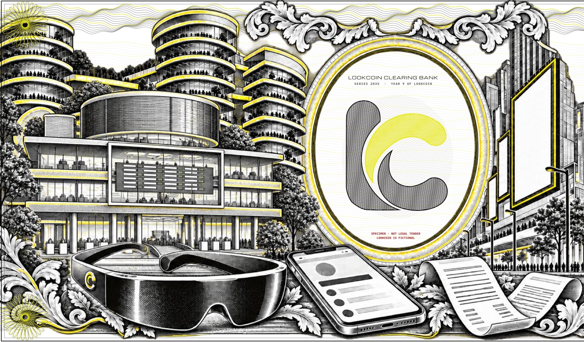
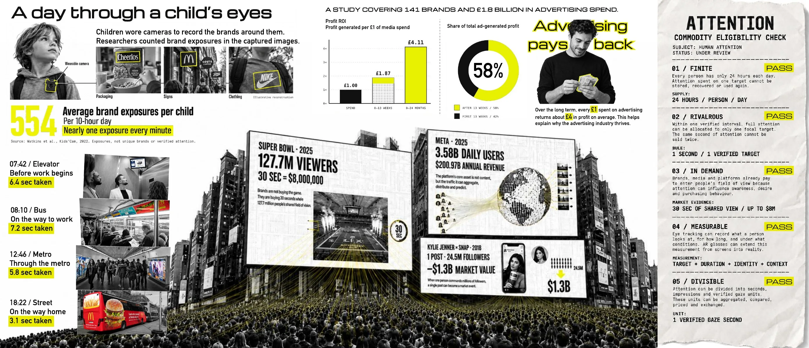
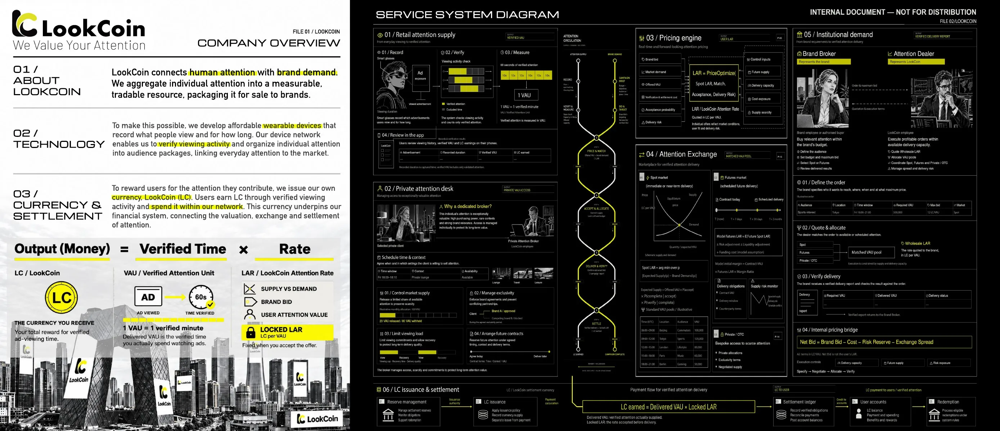
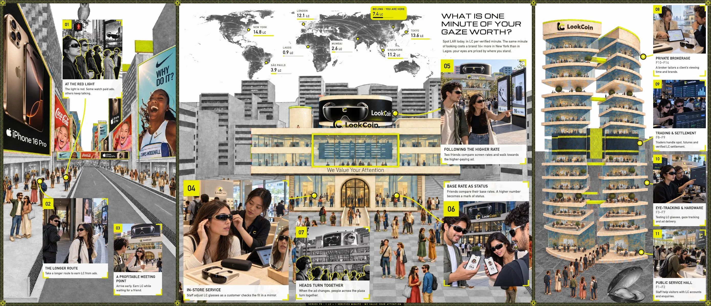
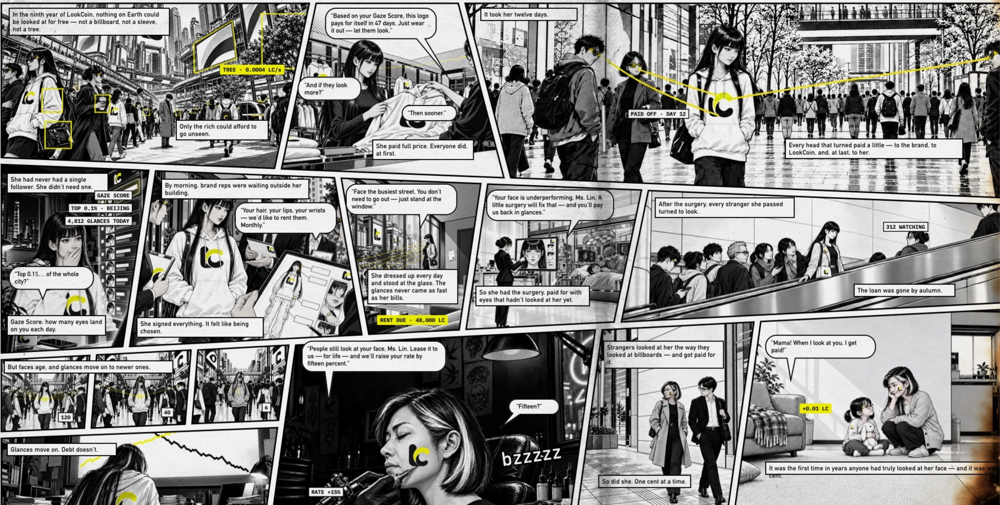

LookCoin
A near-future city where smart glasses verify where we look, and human attention is measured, priced and paid for in its own currency.

Attention already has a market.
The project starts with ordinary advertising on a commute. Online, brands already pay for exposures, clicks and views. On the street, nobody is paid back.
Measured and exchanged
Platforms record views, watch time, clicks and interactions (CPM, CPC, CPV). Viewers trade attention for free content.
Estimated and unpaid
Reach is guessed from foot traffic and location. In Beijing’s densest districts every ten steps pass 4–7 ad surfaces — and passers-by receive nothing.

Does attention pass the commodity test?
Before inventing a currency, I checked attention against the five properties of a tradable good. It passed all five.
Finite
24 hours per person per day; spent attention can’t be stored or reused.
Rivalrous
One verified second goes to one focal target only.
In demand
Brands already pay up to $8M for 30 seconds of shared view.
Measurable
Eye tracking records target, duration, identity and context.
Divisible
Seconds aggregate into verified gaze units that can be priced.
LookCoin — “We value your attention.”
A fictional company aggregates individual attention into a measurable, tradable resource and sells it to brands. Users are paid in the company’s own currency and spend it inside its network.
LookCoin
The currency you receive: your reward for verified ad-viewing time.
Verified Attention Unit
1 VAU = 1 verified minute. Only the time you actually spend looking counts.
LookCoin Attention Rate
LC per VAU, set by supply and demand, brand bids and your own “attention value” — and locked when you accept an offer.
Service system
Six parts move attention from the street to the balance sheet: retail attention supply (glasses record and verify viewing), a private attention desk for exclusive high-value viewers, a pricing engine that computes LAR in real time, an attention exchange with spot and futures markets, institutional demand from brands and their brokers, and LC issuance & settlement where LC earned = delivered VAU × locked LAR.

Look at it. Get paid.
The glasses are the personal interface. Your mouse is your gaze: rest on a highlighted area to look at it. Some actions need a sustained gaze, just as they would in the glasses.
From attention to everyday value
Explore
Open the map and compare nearby offers. Choose an ad by location and live rate.
Verify & earn
3 seconds of gaze confirms the offer; 15 seconds completes verified viewing and LC settles at the accepted rate.
Spend & review
Pay for a recognised product with LC or USD; review earnings and permissions in the app.
The app keeps the books.
The glasses show only what you need in the moment. The app holds the record: earnings, every verified transaction and what you allow the glasses to see.
Device, earnings, records & permissions
Walk the city. Every glance has a price.
A browser simulation of the fictional economy. Scan the map for the district that pays most, enter a street, hold your gaze on an ad for 15 seconds, then spend what you earned.
Mall façades & media walls
8 paid ads · up to 240 LC a walk. Visual load 86%.
Bus shelters & shop fronts
5 paid ads · up to 150 LC a walk. Visual load 41%.
A gate and a corner
3 paid ads · up to 90 LC a walk. Visual load 18%.
What is one minute of your gaze worth?
Spot LAR today, in LC per verified minute. The same minute of looking costs a brand 16× more in New York than in Lagos: your eyes are priced by where you stand.
The world zooms from the globe to a city, a neighbourhood, a flagship store and a pair of glasses: people take longer routes to earn LC, arrive early to meetings to watch ads, compare their base rates as status, and turn their heads together when the screen changes. Inside the LookCoin tower, brokers, traders and eye-tracking engineers keep the market running.


Would you want to live in this world?
LookCoin is a dystopia I don’t want to live in. I didn’t invent it — I only pushed today’s attention economy one step further.
Already on sale
Smart glasses already see what you see, and headsets like Vision Pro track exactly where your eyes land. Over 7 million Meta smart glasses were sold in 2025.
Already watching back
Outdoor screens with cameras now count viewers and how long they look.
Already paying
In China, apps that pay you to watch ads are mainstream — Douyin Lite and Kuaishou Lite have hundreds of millions of monthly users.
When every glance has a price, are your eyes free?Closing line of the playable city
Original boards
Click a board to open it; click again to zoom and pan.